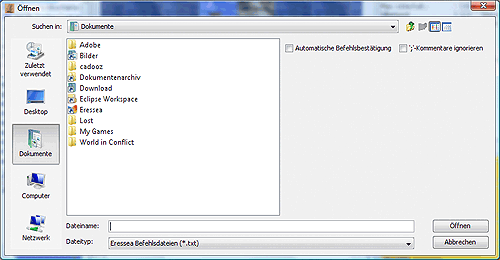

Befehle öffnen
Hier kann man eine Eressea-Befehlsdatei hinzuladen, die auch
mit anderen Tools erstellt werden kann. Bei Auswahl des
Menüpunktes erscheint folgende Dialogbox:

Sie entspricht weitgehend dem bekannten Dateiauswahldialog.
Es gibt jedoch zwei zusätzliche Optionen:
- Automatische Befehlsbestätigung:
Wird diese Option gewählt, werden die Befehle beim
Import gleich bestätigt.
- ';'-Kommentare ignorieren:
Kommentare die mit einem ';' beginnen werden nicht
importiert. Dabei wird natürlich auch der
Bestätigungsstatus der Einheiten ignoriert, da diese als
;-Kommentar gespeichert werden.